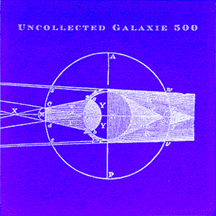

disc four:
Uncollected Galaxie 500
Songs:
Origin:
"Cheese & Onions"
Rutles Highway Revisited
compilation LP
"Them"
June 1990 outtake
"Final Day"
June 1990 outtake
"Blue Thunder (w/sax)"
Blue Thunder EP
"Maracas Song"
August 1989 outtake
"Crazy"
European CD of
Today
(Schemer 8905)
"Jerome"
July 1988 outtake
"Song in 3"
July 1988 outtake
"Oblivious"
[alternate version]
Chemical Imbalance
7" comp.
w/fanzine
"I Can't Believe It's Me"
February 1988 outtake
(early version of "Pictures")
"Walking Song"
1987 demo tape
"The Other Side"
1987 demo tape
"On the Floor"
1987 demo tape
"Rain"
ltd. edition single on Caff Records
"Don't Let Our Youth Go To Waste"
ltd. edition single on Caff Records